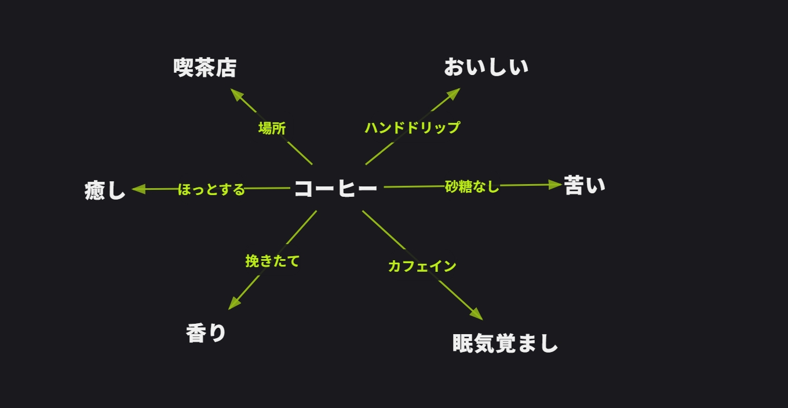
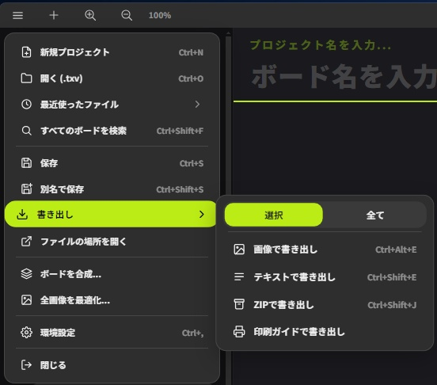
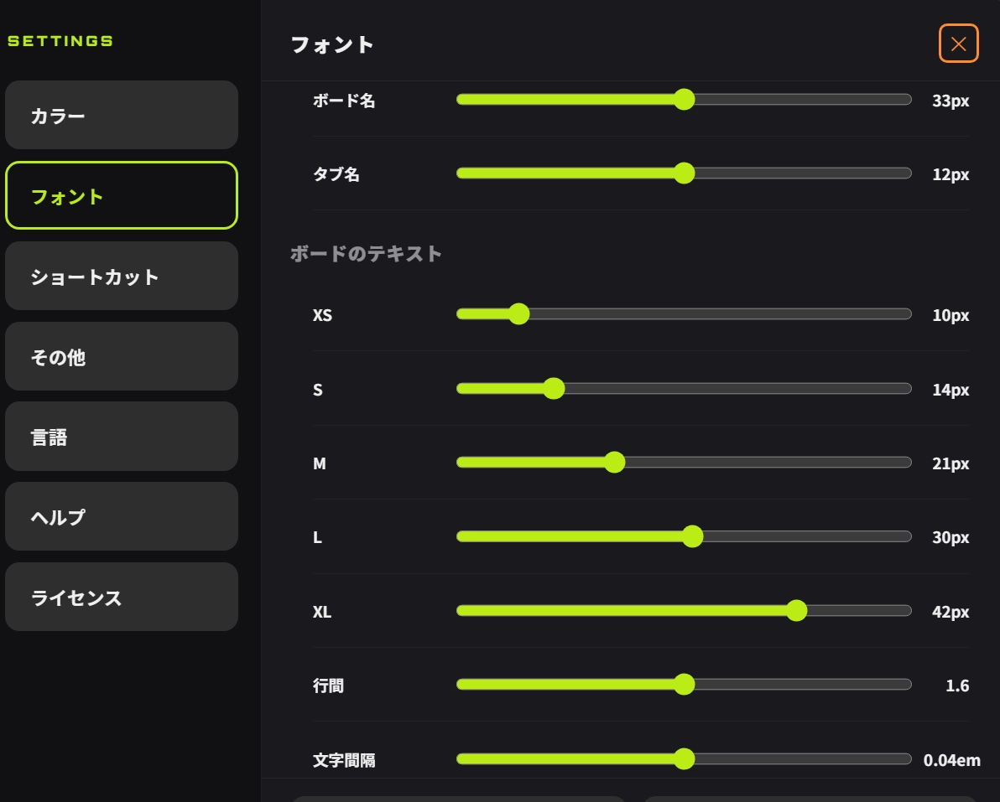
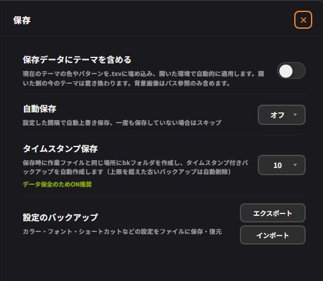

Textvas User Guide


| Ctrl+ | |







| Ctrl+N | |
| Ctrl+O | |
| Ctrl+S | |
| Ctrl+Shift+S | |
| Ctrl+E |
| Ctrl+Z | |
| Ctrl+Y | |
| Ctrl+C | |
| Ctrl+V | |
| Ctrl+A | |
| Delete / BS |
| T | |
| L | |
| M | |
| I |
| Ctrl+↑ | |
| Ctrl+↓ | |
| Ctrl+← | |
| Ctrl+→ |
| Tab | |
| Q | |
| Ctrl+ |
© 2026 typocraft. All rights reserved.